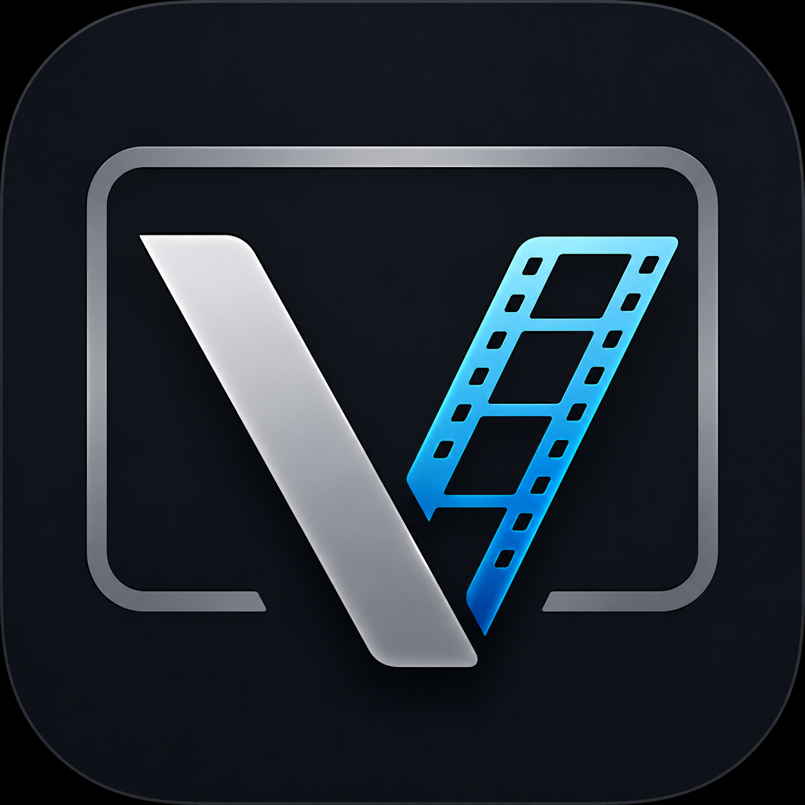

Welcome to

Viewline DocViewline is a professional Python-based review player framework for VFX, animation, and post-production workflows. It provides accurate frame-based and time-based playback for image sequences and movie files while integrating seamlessly with production management and publishing workflows.
This project is to provide a lightweight, extensible, and production-friendly framework for media playback, image sequence review, OpenEXR workflows, and OCIO-based color management.
Core Responsibilities
- Review image sequences, movie files and 3D Scene(usd).
- Frame-accurate playback.
- Audio and video synchronization.
- Timeline navigation and scrubbing.
- Playback controls (Play, Pause, Loop, Frame Step).
- OpenColorIO (OCIO) color management. (in progress)
- Cache visualization.
- AOV (Arbitrary Output Variable) switching.
- Overlay information (frame number, resolution, FPS, metadata).
- Snapshot and annotation support.
- Pipeline integration with published versions and review notes.
The project is built primarily using
- Python 3.10
- PySide6
- OpenGL
- OpenImageIO
- PyAV
- OCIO
- Open USD
This is still an early beta release focused mainly on core architecture, playback workflow, and UI foundations. There is still a lot to improve, but the project has reached a stage where I’m comfortable sharing progress publicly.
© Support, subing85@gmail.com.